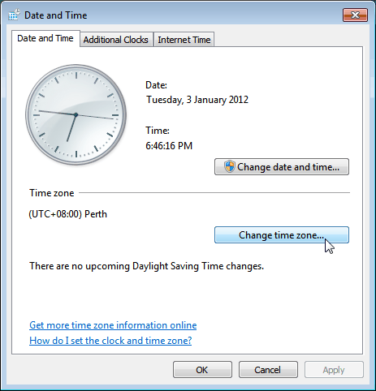

Scenarios
The default time zone for an ECS is the one you selected when creating the image that was used to create the ECS. This section describes how to change the time zone for an ECS to the local one or to another time zone in your network.
After you log in to your ECS, if you find that the time on the ECS is different from the local time, change the time zone for the ECS so that the time on the ECS is the same as the local time.
For Linux ECSs
The process of changing the time zone for a Linux ECS depends on the OS. In this section, the CentOS 6.x 64bit OS is used to demonstrate how to change the time zone for a Linux ECS.
- Log in to the ECS.
- Run the following command to switch to user root:
su - root
- Run the following command to obtain the time zones supported by the ECS:
ls /usr/share/zoneinfo/
In the terminal display, the /user/share/zoneinfo directory contains a hierarchy of time zone data files. Use the directory structure to obtain your desired time zone file.
The directory structure shown in /user/share/zoneinfo includes both time zones and directories. The directories contain time zone files for specific cities. Locate the time zone for the city in which the ECS is located.
- Set the target time zone.
- Run the following command to open the /etc/sysconfig/clock file:
vim /etc/sysconfig/clock
- Locate the ZONE entry and change its value to the name of the desired time zone file.
- Press Esc. Then, run the following command to save and exit the /etc/sysconfig/clock file:
:wq
- Run the following command to check whether the /etc/localtime file is available on the ECS:
ls /etc/localtime
- If the file is available, go to step 7.
- If the file is not available, go to step 8.
- Run the following command to delete the existing /etc/localtime file:
rm /etc/localtime
- Run the following command to create a symbolic link between /etc/localtime and your time zone file so that the ECS can find this time zone file when it references the local time:
ln -sf /usr/share/zoneinfo/Asia/Shanghai /etc/localtime
- Run the following command to restart the ECS so that all services and applications running on the ECS use the new time zone:
reboot
- Log in to the ECS again and run the following command as user root to check whether the time zone has been changed:
ls -lh /etc/localtime
The following information is displayed:
# ls -lh /etc/localtime
lrwxrwxrwx 1 root root 33 Nov 27 11:01 /etc/localtime -> /usr/share/zoneinfo/Asia/Shanghai
For Windows ECSs
- Log in to the ECS.
- Click the time display on the far right side of the task bar located at the bottom of your screen. In the dialog box that is displayed, click Change date and time settings.
The Date and Time page is displayed.
Figure 1 Date and Time

- Click Change time zone.
The Time Zone Settings page is displayed.
- In the Set the time zone pane, choose the target time zone from the Time zone drop-down list.
- Click OK.